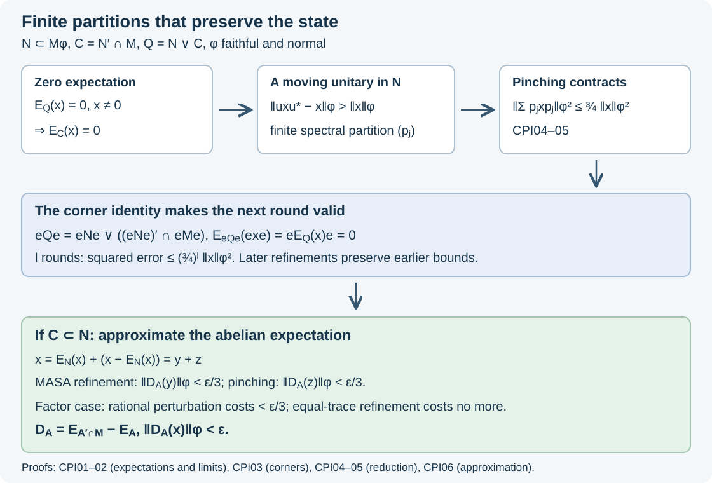

Centralizer partitions and abelian approximation
A finite partition in the centralizer of a state removes off-diagonal blocks without changing that state. We use these block projections to approximate abelian expectations, to reduce finitely many relative-commutant errors simultaneously, and to obtain equal-trace partitions when the centralizing algebra is a factor.
Let \(M\) carry a faithful normal state \(\varphi\), and write \(\|x\|_\varphi=\varphi(x^*x)^{1/2}\). No separability of \(M_*\) is assumed. The centralizer criterion CZ05 identifies
\[ M_\varphi=\{a\in M:\varphi(ax)=\varphi(xa)\text{ for every }x\in M\} \tag{CPI.1} \]with the fixed algebra of modular time. For every modular-invariant subalgebra \(P\), write \(E_P\) for its unique \(\varphi\)-preserving faithful normal expectation, constructed in ME02–04 and ME08. We use its GNS projection and tower identities as proved in SMH05.
Two expectations from a finite partition
Let \(p_1,\ldots,p_m\) be nonzero orthogonal projections in \(M_\varphi\), with sum one, and put \(A=\bigoplus_j\mathbb Cp_j\). There are two different maps:
\[ \begin{aligned} E_A(x)&=\sum_j\frac{\varphi(p_jxp_j)}{\varphi(p_j)}p_j,\\ F_A(x)&=\sum_jp_jxp_j=E_{A'\cap M}(x). \end{aligned} \tag{CPI.2} \]All denominators are positive by faithfulness. The scalar numerator also equals \(\varphi(p_jx)\), by (CPI.1). Compression is completely positive; each positive scalar functional followed by multiplication by \(p_j\) is completely positive, as its scalar Gram matrices are positive. Thus both finite sums are normal completely positive maps. They fix their respective ranges, are unital and bimodular over those ranges, and preserve \(\varphi\) by (CPI.1). Their ranges are \(A\) and \(\bigoplus_jp_jMp_j=A'\cap M\). This proves (CPI.2), including its identification with the unique preserving expectations.
If \(A\subseteq N\subseteq M_\varphi\), the same block formula restricted to \(N\) is \(E_{A'\cap N}\). The restriction of \(E_A\) is likewise the expectation computed inside \(N\). This observation does not identify \(A'\cap N\) with \(A'\cap M\).
On \(H_\varphi\), each preserving expectation is the orthogonal projection onto the closure of its range applied to \(\Omega=\Lambda_\varphi(1)\). Indeed \(\varphi(a^*E_P(x))=\varphi(a^*x)\) for \(a\in P\), and its Schwarz inequality proves contraction in \(\|\cdot\|_\varphi\). Consequently
\[ D_A=F_A-E_A \tag{CPI.3} \]acts as an orthogonal projection on GNS vectors. If \(A\subseteq B\subseteq M_\varphi\) are finite-dimensional abelian algebras, their GNS projections obey
\[ E_A\leq E_B\leq F_B\leq F_A,\qquad D_B\leq D_A. \tag{CPI.4} \]These inequalities refer to Hilbert-space projections. Their nested ranges make them commute. Thus refinement cannot increase either \(\|F_A(x)\|_\varphi\) or \(\|D_A(x)\|_\varphi\).
Increasing abelian algebras and decreasing commutants
We first justify the decreasing limit that is needed here. Let \(P_i\) be a decreasing directed family of modular-invariant von Neumann subalgebras, and let \(P=\bigcap_iP_i\). Their GNS projections \(Q_i\) decrease strongly to a projection \(Q\) onto the intersection of their ranges. Explicitly, for \(j\geq i\),
\[ \|(Q_i-Q_j)\xi\|^2=\|Q_i\xi\|^2-\|Q_j\xi\|^2. \tag{CPI.5} \]The decreasing nonnegative numbers on the right make this a Cauchy net. Its limit lies in every range and fixes their intersection.
We must still identify that intersection with \(\overline{P\Omega}\). For \(x\in M\), the net \(E_{P_i}(x)\) is bounded by \(\|x\|\), so dual-ball compactness gives an ultraweakly convergent subnet, with limit \(b\). Every tail lies in each preceding \(P_i\), so \(b\in P\). Normality of the GNS coefficient functionals makes this subnet converge weakly on \(\Omega\) to \(b\Omega\). Its norm limit is already \(Qx\Omega\). Hence \(Qx\Omega=b\Omega\in\overline{P\Omega}\). Density of \(M\Omega\), and the reverse inclusion of \(P\Omega\) in every range, identify \(Q\) with the GNS projection for \(E_P\). Therefore
\[ \|E_{P_i}(x)-E_P(x)\|_\varphi\longrightarrow0. \tag{CPI.6} \]The compactness input and lower-semicontinuity methods are the concrete dual-space ones used in EL02. Here the bounded approximants, rather than a formal interchange of intersection and closure, prove the range identity.
Now let \(A_i\subseteq M_\varphi\) be an increasing directed family of finite-dimensional abelian algebras, and put \(A=(\bigcup_iA_i)''\). This algebra is abelian and belongs to \(M_\varphi\). The increasing expectation theorem SMH06 and (CPI.6), applied to \(A_i'\cap M\), give
\[ \begin{aligned} E_{A_i}(x)&\longrightarrow E_A(x),\\ F_{A_i}(x)&\longrightarrow E_{A'\cap M}(x) \end{aligned} \quad\text{in }\|\cdot\|_\varphi. \tag{CPI.7} \]The commutants are modular invariant because the modular group fixes every \(A_i\) pointwise. Their intersection is \(A'\cap M\), by the bicommutant theorem.
It follows that
\[ A'\cap M=A \quad\Longleftrightarrow\quad \|D_{A_i}(x)\|_\varphi\longrightarrow0 \text{ for every }x\in M. \tag{CPI.8} \]For the reverse implication, (CPI.7) and faithfulness imply equality of the two limiting expectation maps, hence equality of their ranges. A net is essential here; no countable generating family was introduced.
Relative commutants survive compression
For this section only, let \(N\subseteq M\) be any unital inclusion and \(e\in N\) any projection; a state is unnecessary. Put \(C=N'\cap M\) and \(Q=N\vee C\). Then
\[ (eNe)'\cap eMe=Ce,\qquad eQe=eNe\vee\bigl((eNe)'\cap eMe\bigr). \tag{CPI.9} \]The first commutant is computed on the corner with identity \(e\). The statement is trivial for \(e=0\).
Let \(z=c_N(e)\). The earlier corner-family construction TE07 gives partial isometries \(v_i\in N\), including \(v_0=e\), such that
\[ q_i=v_i^*v_i\leq e,\qquad r_i=v_iv_i^*\text{ are orthogonal},\qquad \sum_i r_i=z. \tag{CPI.10} \]The index set can be arbitrary and the \(q_i\) need not be orthogonal. For \(x\in(eNe)'\cap eMe\), define
\[ y=\sum_i v_i x v_i^*. \tag{CPI.11} \]This is a strong sum of block-diagonal operators, bounded by \(\|x\|\): the summands have orthogonal supporting projections \(r_i\). It belongs to \(Mz\) and satisfies \(ye=x\). It commutes with \(N\). To check the latter assertion, compare the \(i,j\) matrix blocks of \(ay\) and \(ya\) for \(a\in N\). The coefficient \(v_i^*av_j\) lies in \(eNe\), commutes with \(x\), and has left and right supports under \(q_i,q_j\); those same supports commute with \(x\). Thus the blocks agree. Both operators vanish off \(z\), which is central in \(N\).
Hence \(y\in C\), proving the nontrivial inclusion in the first equality of (CPI.9). Conversely an element of \(C\) commutes with \(eNe\) and \(e\), so its compression belongs to that corner commutant. The extension supported by \(z\) is unique: if \(y\in Cz\) and \(ye=0\), then \(yr_i=v_iye v_i^*=0\) for every \(i\), whence \(y=0\).
Since \(N\) and \(C\) commute, the span of products \(nc\) is an ultraweakly dense star algebra in \(Q\). Compression sends such a product to \((ene)(ce)\). Normality of compression proves the second equality in (CPI.9).
Return to \(N\subseteq M_\varphi\). For \(e\ne0\) in \(N\), put \(\varphi_e(x)=\varphi(x)/\varphi(e)\) on \(eMe\). The algebra \(eNe\) centralizes this faithful normal state. Compression of \(E_Q\) is its preserving expectation onto \(eQe\), by bimodularity and uniqueness:
\[ E^{\varphi_e}_{eQe}(exe)=eE_Q(x)e. \tag{CPI.12} \]In particular the condition \(E_Q(x)=0\) persists in every corner used below. The relative commutant in that corner is exactly the one in (CPI.9).
A unitary must move a zero-average element
Assume \(N\subseteq M_\varphi\), and let \(C=N'\cap M\). The algebras \(N,C,Q=N\vee C\) are modular invariant, so their preserving expectations exist. For \(0\ne x\in M\) with \(E_C(x)=0\) and every \(\eta>0\), there is \(u\in\mathcal U(N)\) such that
\[ \|uxu^*-x\|_\varphi^2>(2-\eta)\|x\|_\varphi^2. \tag{CPI.13} \]To prove this, form the ultraweakly closed convex hull \(K\) of the orbit \(uxu^*\). It is compact inside the radius-\(\|x\|\) dual ball. The function \(y\mapsto\varphi(y^*y)\) is lower semicontinuous: if \(y_j\to y\) ultraweakly, Cauchy–Schwarz applied to \(\varphi(y^*y_j)\) gives \(\varphi(y^*y)\leq\liminf_j\varphi(y_j^*y_j)\). For nonzero \(\|y\|_\varphi\) divide by its square; the zero case is immediate. Compactness gives a minimizer, and the parallelogram identity and faithfulness make it unique.
Conjugation by each unitary of \(N\) preserves both \(K\) and \(\|\cdot\|_\varphi\), by (CPI.1). The minimizer \(b\) is therefore fixed by all those conjugations and belongs to \(C\). Unitaries span \(N\): for a selfadjoint contraction \(a\), \(a+i(1-a^2)^{1/2}\) is unitary and has real part \(a\). For \(c\in C\), (CPI.1) gives
\[ \varphi(c^*uxu^*)=\varphi(c^*x). \tag{CPI.14} \]The expectation pairings thus show \(E_C(uxu^*)=E_C(x)\). Normality and convexity extend this to \(K\). Applied to \(b\in C\), it gives \(b=0\). Thus \(0\in K\).
If every unitary violated (CPI.13), expanding its squared norm and using \(\|uxu^*\|_\varphi=\|x\|_\varphi\) would give
\[ 2\operatorname{Re}\varphi(x^*uxu^*)\geq \eta\|x\|_\varphi^2>0. \tag{CPI.15} \]This normal real-linear inequality would hold throughout \(K\), contradicting \(0\in K\).
Geometric pinching for finitely many elements
Suppose \(u\in\mathcal U(M_\varphi)\) and \(\|uxu^*-x\|_\varphi>\|x\|_\varphi\). Bounded spectral calculus SK04 and SK08 gives a finite-spectrum unitary \(v=\sum_j\lambda_jp_j\) approximating \(u\) in operator norm, with its spectral partition in \(M_\varphi\), sufficiently closely that the same strict inequality holds for \(v\). To reduce this assertion to selfadjoint spectral calculus, put \(c=(u+u^*)/2\), \(s=(u-u^*)/(2i)\), and \(h=\arccos(c)(2\,1_{[0,\infty)}(s)-1)\). The commuting operators \(c,s\) satisfy \(c^2+s^2=1\); hence \(\cos h=c\), \(\sin h=s\), and \(u=e^{ih}\). Finite spectral partitions of \(h\) give the asserted approximation. This approximation preserves the strict inequality because
\[ \|uxu^*-vxv^*\|_\varphi \leq2\|u-v\|\,\|x\|_\varphi. \tag{CPI.16} \]Left multiplication has its usual operator-norm bound. Right multiplication by \(b\in M_\varphi\) has the same bound, since \(\varphi(b^*x^*xb)=\varphi(bb^*x^*x)\leq\|b\|^2\varphi(x^*x)\).
The vectors \(p_ixp_j\Omega\) are pairwise orthogonal. Multiplication of the adjacent middle projections proves orthogonality when the first indices differ; moving the final centralizer projection through \(\varphi\) proves it when the second indices differ. Consequently
\[ \begin{aligned} \|vxv^*-x\|_\varphi^2 &=\sum_{i\ne j}|\lambda_i\overline{\lambda_j}-1|^2 \|p_ixp_j\|_\varphi^2\\ &\leq4\left(\|x\|_\varphi^2- \left\|\sum_jp_jxp_j\right\|_\varphi^2\right). \end{aligned} \tag{CPI.17} \]Thus this finite partition has pinching square norm less than \(3\|x\|_\varphi^2/4\).
Now suppose \(x_1,\ldots,x_s\in M\) satisfy \(E_Q(x_j)=0\), where \(Q=N\vee(N'\cap M)\), and let \(\varepsilon>0\). There is a finite partition \((p_k)\) in \(N\) such that
\[ \left\|\sum_kp_kx_jp_k\right\|_\varphi \leq\varepsilon\|x_j\|_\varphi \quad(1\leq j\leq s). \tag{CPI.18} \]Zero elements need no reduction. For one nonzero \(x\), the tower identity gives \(E_C(x)=E_CE_Q(x)=0\). Apply CPI04 with \(\eta=1/2\), and then (CPI.17). This is the first reduction by a factor at most \(3/4\) in squared norm.
After a partition has been chosen, (CPI.9–12) give the same zero-expectation hypothesis for each diagonal block in its corner with normalized state \(\varphi_{p_k}\). Repeat the reduction in each nonzero block and combine the finitely many corner partitions. Multiplying each corner estimate by \(\varphi(p_k)\) and adding uses orthogonality of the blocks, so every full refinement reduces the squared norm of the pinching by a factor at most \(3/4\). Choose an integer \(l\) with \((3/4)^{l/2}\leq\varepsilon\).
For a finite family, first achieve the bound for \(x_1\), then run the same corner refinements for \(x_2\), and continue. Later refinements cannot increase any earlier pinching norm, by (CPI.4). This proves all the inequalities simultaneously.
If \(N'\cap M=\mathbb C1\), then \(Q=N\). Apply (CPI.18) to \(x_j-E_N(x_j)\). The orthogonal-projection property gives \(\|x_j-E_N(x_j)\|_\varphi\leq\|x_j\|_\varphi\), and therefore
\[ \left\|\sum_kp_k\bigl(x_j-E_N(x_j)\bigr)p_k\right\|_\varphi \leq\varepsilon\|x_j\|_\varphi. \tag{CPI.19} \]The corner argument is why the stronger hypothesis \(E_Q(x_j)=0\) appears in the simultaneous statement, instead of only \(E_C(x_j)=0\).
Abelian approximation with equal-trace atoms
Suppose \(N\subseteq M_\varphi\) and \(N'\cap M\subseteq N\). For every finite subset \(X\subset M\) and \(\varepsilon>0\), there is a finite-dimensional abelian \(A\subseteq N\) such that
\[ \|E_{A'\cap M}(x)-E_A(x)\|_\varphi<\varepsilon \quad(x\in X). \tag{CPI.20} \]If \(N\) is a factor, \(A\) can be chosen with mutually equivalent minimal projections in \(N\).
For empty \(X\), take \(A=\mathbb C1\), which also satisfies the balanced conclusion. Otherwise write \(y_x=E_N(x)\), \(z_x=x-y_x\). Here \(Q=N\), so CPI05 gives a finite-dimensional abelian \(A_0\subseteq N\) with \(\|F_{A_0}(z_x)\|_\varphi<\varepsilon/3\) for every \(x\in X\). For example choose its relative tolerance smaller than \(\varepsilon/(3(1+\max_X\|z_x\|_\varphi))\). Since \(E_{A_0}(z_x)=0\), this is also its \(D_{A_0}\) bound.
Extend \(A_0\) to a maximal abelian algebra \(B\) in \(N\). Zorn's lemma applies because the von Neumann closure of a chain of commuting abelian algebras is abelian. The finite-dimensional subalgebras of \(B\) containing \(A_0\) form a directed generating family: finite spectral partitions approximate every selfadjoint element, and partitions commute inside \(B\). Apply (CPI.8) inside \(N\), with the faithful tracial state \(\varphi|_N\), to choose one such \(A\) for which \(\|D_A(y_x)\|_\varphi<\varepsilon/3\) for all \(x\in X\). The maps on \(y_x\in N\) agree with those computed in \(M\), by (CPI.2). Refinement controls the \(z_x\) terms, so
\[ \|D_A(x)\|_\varphi \leq\|D_A(y_x)\|_\varphi+\|D_A(z_x)\|_\varphi <2\varepsilon/3. \tag{CPI.21} \]No estimate of the form \(\|y_x\|_\varphi+\|z_x\|_\varphi\leq\|x\|_\varphi\) is used.
We prove the balanced conclusion, including the perturbation step. Put \(\tau=\varphi|_N\); it is a faithful normal tracial state. If \(N\) has a minimal projection, factor comparison gives an orthogonal family of equivalent minimal projections summing to one. The family is finite, since each has the same positive trace. Their matrix units identify \(N\) with a full matrix algebra: each minimal diagonal corner is scalar. Refine the atoms of \(A\) to rank-one projections there. They are equivalent, and (CPI.4) preserves (CPI.20).
Otherwise \(N\) is a II₁ factor. We use the complete earlier projection comparison and dyadic trace-cut construction preceding Theorem 3.2. It proves that every trace value between zero and the trace of a projection occurs inside that corner, and that equal finite traces in a factor give equivalent projections.
Let \(p_1,\ldots,p_m\) be the atoms of \(A\), with \(t_i=\tau(p_i)>0\). Choose positive rationals \(r_i=k_i/K\), summing to one, converging to \(t_i\). Rounding \(Kt_i\) and distributing the bounded integer remainder supplies such choices as \(K\to\infty\), with every \(k_i>0\) eventually. For each surplus \(t_i>r_i\), remove from \(p_i\) a subprojection \(h_i\) of trace \(t_i-r_i\). Split \(h=\sum_i h_i\) into orthogonal projections of traces \(r_j-t_j\) for the deficit indices. Add each such piece to the corresponding deficit \(p_j\). The resulting partition \(q_1,\ldots,q_m\) satisfies
\[ \tau(q_i)=r_i,\qquad \|q_i-p_i\|_\varphi^2=|r_i-t_i|\longrightarrow0. \tag{CPI.22} \]For each index the new projection is either below or above the old one, which proves the norm equality.
These uniformly bounded selfadjoint differences converge strongly in the faithful GNS representation. Indeed they tend to zero on \(\Omega\), and hence on \(M'\Omega\), since they commute with \(M'\). That set is dense by separation of \(\Omega\), as proved in SMH06. The common norm bound extends convergence to every vector. Thus \(q_ixq_i\to p_ixp_i\) strongly for each fixed \(x\), and in particular in \(\|\cdot\|_\varphi\). Also Cauchy–Schwarz gives
\[ |\varphi((q_i-p_i)x)| \leq\|q_i-p_i\|_\varphi\,\|x\|_\varphi. \tag{CPI.23} \]The denominators \(\varphi(q_i)\) tend to the positive \(\varphi(p_i)\). Formula (CPI.2) therefore proves \(D_{\operatorname{span}(q_i)}(x)\to D_A(x)\) in \(\|\cdot\|_\varphi\). For the finite set \(X\), choose the rational partition close enough that this change is less than \(\varepsilon/3\).
Finally split each \(q_i\) into \(k_i\) projections of trace \(1/K\), using the same corner trace-cut theorem. All \(K\) projections are equivalent in \(N\). Their generated algebra refines \(\operatorname{span}(q_i)\), so (CPI.4) finishes the balanced conclusion. The proof supplies the required topology of the perturbation; a small state norm on projections was not incorrectly turned into an operator-norm bound.
The mechanism and the necessary error correction

Figure CPI.1. The relative commutant \(C=N'\cap M\), the larger algebra \(Q=N\vee C\), and the normalized corner state are those in CPI03–05. Each full refinement multiplies the squared pinching norm by at most \(3/4\). Under \(C\subseteq N\), CPI06 uses two errors below \(\varepsilon/3\) and a rational-partition perturbation below \(\varepsilon/3\). The diagram represents those proved operations, not a claim of operator-norm approximation. Its SVG is the reproducible drawing source.
For an exact matrix check, take \(M=M_2(\mathbb C)\), \(\varphi(x)=\operatorname{Tr}(\operatorname{diag}(a,1-a)x)\), \(0<a<1\), and \(N\) the diagonal algebra. The element \(x=e_{12}\) has \(\|x\|_\varphi^2=1-a\) and \(E_N(x)=0\). The centralizer unitary \(u=\operatorname{diag}(1,-1)\) sends \(x\) to \(-x\), giving displacement square \(4(1-a)\). The two diagonal spectral projections pinch \(x\) to zero. All the centralizer and state-preservation hypotheses hold even when \(a\ne1/2\).
The comparison statements are Takesaki, Theory of Operator Algebras III, XIV.5, Lemmas 5.4–5.7 and Proposition 5.8, printed pages 138–144. The displayed error estimate in the proof of Proposition 5.8 at page 144 ends by bounding a sum of two orthogonal-vector norms by the norm of their sum. That inequality is false. With the normalized matrix trace, \(x=1+(e_{12}+e_{21})\) has diagonal part \(y=1\) and orthogonal remainder \(z=e_{12}+e_{21}\), so
\[ \|y\|_\varphi+\|z\|_\varphi=2,\qquad \|x\|_\varphi=\sqrt2. \tag{CPI.24} \]Orthogonality instead gives the bound \(\|y\|_\varphi+\|z\|_\varphi\leq\sqrt2\|x\|_\varphi\). The proposition remains valid: the separate error allocation (CPI.21) proves its stated tolerance, and (CPI.22–23) supplies the balanced-projection argument in detail.
Exercises with complete solutions
1. Distinguish the two maps. For the diagonal rank-one partition of \(M_2\), are the two maps in (CPI.2) different? What happens if \(M=M_2\overline\otimes M_2\) and \(p_i=e_{ii}\otimes1\), with normalized trace?
Solution. In \(M_2\), every corner is scalar, so both maps are the diagonal expectation. In the tensor example, \(F_A\) retains each full second-factor matrix block, while \(E_A\) replaces that block by its normalized trace times \(p_i\). For \(x=e_{11}\otimes e_{12}\), \(F_A(x)=x\) and \(E_A(x)=0\).
2. Why not only zero scalar average? Let \(N=M=M_2\) with normalized trace, and let \(x_1,x_2,x_3\) be the three Pauli matrices. Each has \(E_{N'\cap M}(x_j)=0\). Can one partition in \(N\) make all three pinching norms arbitrarily small?
Solution. The one-block partition leaves all norms equal to one. Any nontrivial partition has two rank-one atoms \(p,1-p\). Write \(2p-1=\sum_jn_jx_j\), where \(n_j\) are real and \(\sum_jn_j^2=1\); these identities follow by expressing a traceless selfadjoint \(2\times2\) matrix in the Pauli basis and squaring it. Pinching \(x_j\) gives \(n_j(2p-1)\), of \(L^2\) norm equal to \(|n_j|\). At least one is at least \(1/\sqrt3\). Here \(Q=N\vee(N'\cap M)=M\), so the stronger zero-\(E_Q\) hypothesis in (CPI.18) fails, as it must.
3. A corner with zero central carrier. How is (CPI.11) interpreted at \(e=0\)?
Solution. Its family is empty and its sum is zero. Both algebras in (CPI.9) are the zero corner. No normalized state \(\varphi_e\) is defined or needed; (CPI.12) is stated only for \(e\ne0\).
4. Number of reductions. Give a sufficient number of full refinements for one element and tolerance \(0<\varepsilon<1\).
Solution. Any integer \(l\geq 2\log(1/\varepsilon)/\log(4/3)\) has \((3/4)^{l/2}\leq\varepsilon\). It bounds refinement rounds, not the number of atoms: each round's finite spectral partition can have a different size.
5. Two-sided state norm. Can the construction control \(\|x\|_\varphi^\#=(\|x\|_\varphi^2+\|x^*\|_\varphi^2)^{1/2}\)?
Solution. Apply CPI05 to the finite family enlarged by all adjoints. Expectations and pinching preserve adjoints, and \(E_Q(x^*)=E_Q(x)^*\). Add the two squared inequalities. For the absolute-error approximation CPI06, request tolerance \(\varepsilon/\sqrt2\) for both \(x\) and \(x^*\); the resulting \(\#\)-error is less than \(\varepsilon\).
The results above do not assume separable predual and do not assert the subsequent construction or regularity of a maximal abelian subalgebra in a prescribed factor. Those additional conclusions require the further arguments of XIV.5.